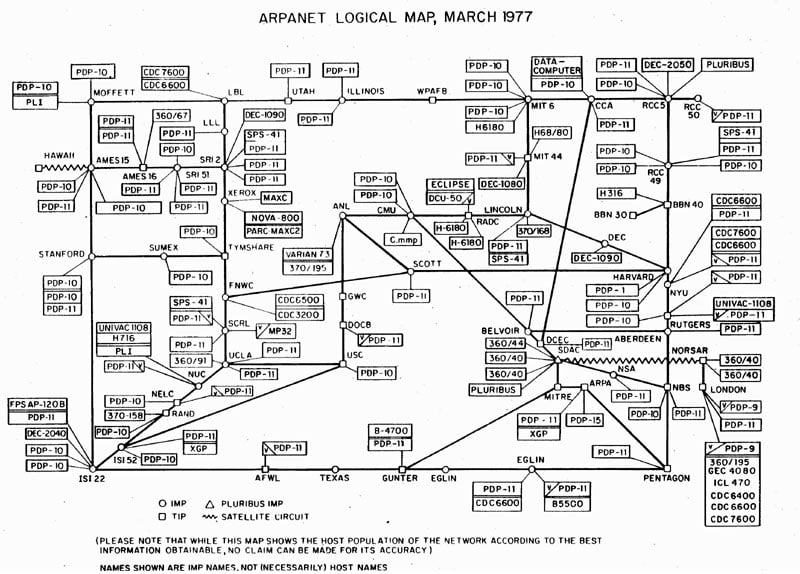

Quando se fala de rede de computadores, normalmente parece um assunto restrito à profissionais da área de TI.
No entanto, elas estão presentes em quase tudo que faz parte do mundo moderno e do que fazemos na Internet.
Graças à elas, que além de navegar pelos sites, você ouve música e vê filmes em streaming, faz pagamentos usando seu cartão de crédito ou débito, usa o aparelho de GPS ou o Google Maps, controla a babá eletrônica pelo smartphone ou tem a mercadoria comprada no e-commerce separada em tempo recorde.
Na verdade, atualmente há redes domésticas maiores e com maior tráfego de dados do que muitas das primitivas redes de computadores empresariais do passado.
Por isso, no bate papo de hoje, vamos dar o pontapé inicial no assunto e falar desde o surgimento das redes e o que são as redes de computadores.
Quando se fala em história das redes de computadores, diferentemente de alguns adventos, ela não tem uma data precisa e nem mesmo um ano de lançamento, mas sua evolução é compreendida ao longo de um período.
Isso porque ao considerarmos os eventos que mais tarde dariam impulso ao seu surgimento efetivo, os computadores nem mesmo existiam, pelo menos não na forma como estamos acostumados a imaginá-los.
O conceito que mais tarde seria implementado, nasceu ainda nos anos 60 quando havia intensas pesquisas para o desenvolvimento de tecnologias voltadas para comunicação por voz, as quais logo perceberam que poderiam ser usadas para transmissão também de dados, já que as redes de voz usavam o conceito de transmissão de pacotes por meio de sinais elétricos nos fios.
Mas foi apenas na década de 70 que surgiram as primeiras redes, embora ainda não se tinha um computador como temos nas redes hoje em dia.
Os poucos mainframes – literalmente enormes computadores que podiam ocupar uma sala inteira – existentes nas grandes empresas, governos e centros de pesquisa, eram acessados por terminais e que basicamente eram um teclado e um monitor.
Apesar das suas particularidades, essas foram os “embriões” das redes atuais.
Nesse momento, os envolvidos entenderam que era preciso criar uma linguagem para que as máquinas comunicassem-se entre si de modo mais seguro e confiável.
E para isso foi utilizado o TCP/IP (Transmission Control Protocol / Internet Protocol), que na ocasião foi implantado pelo U.S. Department of Defense Advanced Research Projects Agency, para o então projeto nomeado de ARPANET, ainda em 1969 e que mais tarde daria origem à Internet.
Vale mencionar que inicialmente o protocolo usado na ARPANET, não foi o TCP/IP, mas o NCP (Network Control Protocol) e que logo mostrou-se inadequado para gerenciar um grande volume de dados que o crescimento da rede demandaria.
Em 1972, por ocasião do “lançamento” oficial da ARPANET, ela já era uma rede de 15 nós e que são os pontos de troca de dados de uma rede.
Cinco anos depois, em 1977, já eram cerca de 100 nós, entre os quais haviam computadores do Pentágono, de centros de pesquisa e universidades, como do MIT (Massachusetts Institute of Technology), Harvard, Stanford e UCLA e até poucas empresas, como a Xerox.
Cerca de uma década depois, nos anos 80, os computadores começavam tornar-se menores e mais acessíveis, graças ao desenvolvimento de processadores por empresas como Intel, IBM e Motorola, quando foi cunhado o termo PC (Personal Computer ou Computador Pessoal).
Foi da primeira, que surgiu em meados dos anos 70, o 8086 e que serviu de modelo da famosa arquitetura x86 usada em muitos dos processadores modernos.
A “popularização” dos computadores impulsionou ao mesmo tempo a proliferação das redes para comunicação dos PCs e da própria Internet.
Na resposta mais simples e simplista possível, é a conexão de dois ou mais dispositivos de forma que sejam capazes de trocar dados e compartilhar recursos.
Assim, um notebook conectado corretamente a uma impressora – seja por Wi-Fi, seja por cabo USB – é uma rede, bem pequena é verdade, mas é uma, visto que trocam informações e no caso do notebook, usa o recurso de impressão.
Note que as duas condições – trocar dados e compartilhar recursos – não precisam necessariamente serem verificadas para caracterização da rede. Basta apenas uma.
Toda rede de computadores, por mais simples que seja em termos de dispositivos, deve ter regras básicas para que a comunicação aconteça de forma a garantir o envio seguro e eficiente dos dados e a isso dá-se o nome de protocolos de rede.
É por isso que mencionamos logo acima que é rede quando o notebook está corretamente conectado à impressora, sem o que, não acontece a comunicação e rigorosamente não podemos dizer que existe uma rede configurada.
Apenas ligar fisicamente por um cabo dois dispositivos, não implica em ter uma rede, pois para tal, pressupõe-se uma série de protocolos, regras e controles.
Ou seja, é preciso que os dados transitem de um computador para outro, sem que sejam alterados ou perdidos e para tanto, é necessário que a rede seja capaz de determinar exatamente de onde vêm e para onde vão os dados, o que implica que cada dispositivo interligado possa ser identificado, o que é possível graças ao endereço IP.
Todo esses processos são responsabilidade da rede.
Uma rede para funcionar de acordo com o que vimos até aqui, precisa de dois grupos de componentes – hardware e software.
Em termos de hardware, temos tanto os dispositivos que utilizamos e que são mais óbvios e conhecidos, como o notebook e o smartphone, mas há também dispositivos da Internet das Coisas (IoT), como câmeras IP, geladeiras, veículos autônomos, robôs, smartwatches, smartTVs, consoles de games e por fim, aqueles que fazem parte da infraestrutura, como servidores, switches, roteadores, modens, firewalls, etc.
No grupo do software, da mesma forma que temos o sistema operacional e os diversos aplicativos no notebook ou smartphone que fazem a interface com o hardware para nos entregar resultados, em uma rede também há programas com objetivo similar, seja instituindo os protocolos (TCP/IP, HTTP, SMTP, POP, UDP, FTP, etc), seja manipulando-os e combinando-os por uma interface amigável, para executarmos ações, como os navegadores, clientes de e-mail e terminais (telnet, SSH, etc).
Portanto, uma infraestrutura de rede necessariamente é composta de hardware e software.
Um protocolo de rede é um conjunto de regras bem definidas e rígidas, bem como um conjunto ordenado de ações, segundo os quais os dados que transitam na rede são trocados.
Muitos desses protocolos nós usamos diariamente na Internet, uma vez que pode-se dizer que ela é a interligação de várias redes em escala global e por isso é também chamada de rede mundial de computadores.
Como antecipamos, cada dispositivo em uma rede precisa ser identificado e identificável, razão pela qual cada vez que você se conecta à Internet ou à rede da empresa, seu notebook recebe um endereço IP.
Na verdade, ao fazê-lo em uma rede local, como no roteador Wi-Fi da sua casa, ele faz uso de dois IPs, sendo um no escopo da LAN (Local Area Network) e outro da WAN (Wide Area Network).
Para qualquer pessoa fora da sua rede doméstica, todos na sua residência têm o mesmo IP (escopo da WAN), mas internamente seu notebook tem um IP (escopo da LAN), o smartphone da(o) sua(eu) esposa(o) tem outro IP, a impressora sem fio tem um terceiro e assim por diante para cada dispositivo conectado ao roteador.
Essa atribuição de qual IP é atribuído a cada dispositivo, é responsabilidade do DHCP (Dynamic Host Configuration Protocol) e, portanto, um protocolo.
Quando você abre o navegador e acessa um site qualquer, as regras que determinam como se dá a comunicação entre o servidor web onde o site está hospedado e o navegador, são determinadas pelo HTTP (Hypertext Transfer Protocol).
Atualmente na verdade, o comum, o correto e seguro, é o HTTPS e não mais o HTTP e que nada mais é do que o último com uma camada de segurança por meio de criptografia.
Para enviar e receber e-mails, para fazer upload de seus arquivos para a nuvem ou para jogar online, usa-se respectivamente o SMTP, POP2, FTP, TCP e UDP. Todos exemplos protocolos que determinam como os dados são controlados e transmitidos para cada situação e de acordo com a sua natureza.
Assim, por exemplo, resumidamente ao enviar um e-mail usando o SMTP, os dois servidores de e-mail começam com o HELO/EHLO e que também é conhecido como “hand shake” (aperto de mãos), em que ambos servidores identificam-se informando um ao outro seus respectivos nameservers, confirmam o SMTP ou ESMTP (Extended SMTP), remetente, destinatário, tamanho da mensagem, a transmissão dos dados relativos ao seu conteúdo e terminam com o comando QUIT.
Essa sequência de ações e como cada informação é transmitida, é o protocolo de envio de e-mail (SMTP ou Simple Mail Transfer Protocol).
Pode-se dizer que a estrutura de uma rede é composta da borda da rede, do núcleo e dos enlaces.
A borda da rede corresponde à porção final ou mais externa dos dispositivos. Já o no caso do núcleo, em geral é caracterizado pelos roteadores, mas pode ser também um servidor, no caso de uma VPN ou até um firewall. Por fim, os enlaces, são os meios para conectar tudo e que pode ser um cabo ou ondas de rádio no caso do 5G ou da Starlink.
Quando por meio do seu notebook você conecta-se usando um cabo diretamente ligado ao roteador para acessar sites na Internet, temos:
Os servidores nos quais estão hospedados os sites acessados, bem como o seu notebook, são elementos da borda da rede;
O roteador, o modem do provedor de acesso, roteadores e switches dentro da infraestrutura do provedor e o mesmo no data center em que está o servidor que hospeda o site, fazem parte do núcleo da rede;
Por fim, o cabo que conecta o notebook ao roteador, o que vai da sua residência ao poste e do poste ao provedor de acesso, bem como todos os demais cabos até o data center, são os enlaces.
Rede de computadores é a infraestrutura de hardware e software para troca de dados entre dois ou mais dispositivos e é a base de tudo que temos na Internet.